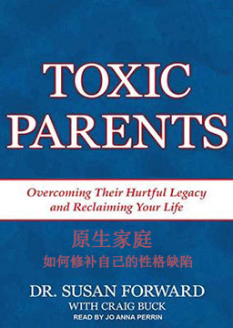

双语小说
收录中英文双语小说300多部，包括世界经典名著、社会小说、悬疑小说等短篇和长篇小说，可按照初中难度、高中难度和大学难度分类阅读，每部小说都有分段中英文对照，点击单词可查看中文翻译。
圣经旧约 (Holy Bible Old Testament)
作者： () [犹太]
一部有关犹太人早期生活的百科全书，它完整地展示了犹太民族的发展史，生动、形象地再现了犹太人民广阔的生活画面，详尽地记载了他们在各个领域的杰出成就，深刻地反映了他们的道德观、价值观，为了解和研究古代犹太人社会提供了丰富而珍贵的历史资料。《圣经·旧约》也是一部文学巨著，它几乎运用了所有的文学创作形式，如：神话、传说、小说、寓言、戏剧、散文、诗歌、谚语、格言，并独创了先知文学和启示文学，为繁花似锦的世界文学做出了独特的贡献。
东方快车谋杀案 (Murder on the Orient Express)
作者：阿加莎·克里斯蒂 (Agatha Christie) [英国]
比利时名侦探赫尔克里·波洛在叙利亚阿勒颇为法国军队侦破一起内部案件后，搭乘托罗斯快车前往土耳其的伊斯坦布尔，打算从那里转车回欧洲。在车厢中，除了波洛外，只有两位英国旅客，一个是驻印度的英军军官，另一个则是位面容端庄的小姐，这两名乘客似乎非常熟络，互称对方为阿巴思诺特上校和玛丽·德贝纳姆小姐。列车抵达伊斯坦布尔后，波洛渡过博斯普鲁斯海峡，在托卡良旅馆遇到旧友——国际客车公司的董事布克先生。二人在餐厅中共进晚餐时，邻桌的美国人雷切特引起了波洛的注意，他看上去有六七十岁，眼睛里始终透露着凶狠、邪恶的气息。而更奇怪的是，似乎全世界的人都选在那一夜出行，原本铺位一向宽裕的豪华列车竟一票难求。急于返回英国却买不到车票的波洛，在布克先生的帮助下挤上了列车。 第二天中午，来到餐车的波洛，依照习惯开始观察起车厢里的旅客：身材魁梧、皮肤黝黑的意大利人，瘦小端庄、佣人模样的英国人，一个大个子、像是旅行推销员的美国人，一板一眼的俄罗斯老贵妇以及侍者，来自匈牙利的大使夫妇，还有阿巴思诺特上校和德贝纳姆小姐等人。车厢另一头则坐着麦奎因和他的雇主雷切特。餐车散席后，旅客们陆陆续续地离开。就在这时，雷切特突然凑了上来。来人已经得知波洛身份，他直言自己的生命正受到威胁，希望能够雇佣波洛来保护自己。波洛不为所动。当天夜里，列车抵达贝尔格莱德，加挂上车厢。布克先生让出一号包厢给波洛，自己则搬到二等车，波洛接受他的好意，搬进雷切特隔壁的包厢。当天深夜，睡梦中的波洛被一声哀嚎惊醒。同时，由于遭遇暴风雪，列车被积雪困在温科夫齐和布洛德之间动弹不得。深陷积雪的车厢内，雷切特死在了他的包厢，他被刺了十二刀，可包厢的门却是反锁着的。随着调查的深入，案情似乎更加扑朔迷离，波洛想出了两种截然不同的结论。
原生家庭: 如何修补自己的性格缺陷 (Toxic Parents: Overcoming Their Hurtful Legacy and Reclaiming Your Life)
作者：苏珊·福沃德 (Susan Forward) [美国]
不健康的家庭体系，就像高速公路上的连环追尾，其恶劣影响会代代相传！这是一部振聋发聩的家庭心理疗伤经典之作。苏珊·福沃德博士通过工作中接触到的大量真实素材，分析了不健康的原生家庭是如何伤害子女，并特续影响子女成年后的生活的。难能可贵的是，作者的主旨并不在于控诉这样的父母，而在于传授具体的对策，使那些受过或仍在承受父母伤害的人们获得勇气和力量，从与父母的负面关系模式中解脱，恢复自信和力量，得到自由和幸福。
理智与情感 (Sense and Sensibility)
作者：简·奥斯汀 (Jane Austen) [英国]
英国女作家简·奥斯汀创作的长篇小说。该作讲述埃莉诺和玛丽安两姐妹生在一个英国乡绅家庭，姐姐善于用理智来控制情感，妹妹的情感却毫无节制，因此面对爱情时，她们作出了不同的反应。内容简介：一家之主死后把遗产留给了前妻所生的儿子约翰， 而他现在的妻子与三个女儿被迫搬走，没得到一分钱， 约翰却爱上了三哥女儿中的一个，但约翰家里势力眼，看不起穷人家的女儿， 三个女儿的的另一个在一次偶然中认识了一个男人并疯狂的爱上了他，因而也就看不到她身边一直有个默默爱着她的男人。最小的女儿聪明纯真但却很理智，明辨是非，对他们的情感看的清清楚楚， 故事就是围绕三姐妹的情感展开叙述。
悉达多 (Siddhartha)
作者：赫尔曼·黑塞 (Hermann Hesse) [德国]
佛教创始人为乔达摩·悉达多，即佛祖释迦牟尼。释迦牟尼佛本来就是人，“悉达多”的意思是“目的达到的人。”本书探讨了个人如何在有限的生命中追求无限的、永恒的人生境界的问题。读者从中既可以洞察作家对人性的热爱与敬畏，对人生和宇宙的充满睿智的理解，又能够感受到他对传统的人道主义理想的呼唤和向往，同时，还可以领略到作为西方人的作者对东方尤其是中国思想智慧的接受与借鉴。内容简介：古印度贵族青年悉达多英俊聪慧，拥有人们羡慕的一切。为了追求心灵的安宁，他孤身一人展开了求道之旅。他在舍卫城聆听佛陀乔答摩宣讲教义，在繁华的大城中结识了名妓伽摩拉，并成为一名富商。心灵与肉体的享受达到顶峰，却让他对自己厌倦、鄙弃到极点。在与伽摩拉最后一次欢爱之后，他抛弃了自己所有世俗的一切，来到那河边，想结束自己的生命。在那最绝望的一刹那，他突然听到了生命之河永恒的声音……经过几乎一生的追求，悉达多终于体验到万事万物的圆融统一，所有生命的不可摧毁的本性，并最终将自我融入了瞬间的永恒之中。
红字 (The Scarlet Letter)
作者：纳撒尼尔·霍桑 (Nathaniel Hawthorne) [美国]
美国浪漫主义作家纳撒尼尔·霍桑创作的长篇小说。发表于1850年。书中讲述了发生在北美殖民时期的恋爱悲剧。小说惯用象征手法，人物、情节和语言都颇具主观想象色彩，在描写中又常把人的心理活动和直觉放在首位。因此，它不仅是美国浪漫主义小说的代表作，同时也被称作是美国心理分析小说的开创篇。内容简介：在北美殖民时期，海丝特嫁给了医生奇灵渥斯，他们之间却没有爱情。在孤独中白兰与牧师丁梅斯代尔相恋并生下女儿珠儿。白兰被当众惩罚，戴上标志“通奸”的红色A字示众。然而白兰坚贞不屈，拒不说出孩子的父亲。小说惯用象征手法，人物、情节和语言都颇具主观想象色彩，在描写中又常把人的心理活动和直觉放在首位。因此，它不仅是美国浪漫主义小说的代表作，同时也被称作是美国心理分析小说的开创篇。
爱丽丝梦游仙境 (Alice's Adventures in Wonderland)
作者：刘易斯·卡罗尔 (Lewis Carroll) [英国]
小姑娘爱丽丝追赶一只揣着怀表、会说话的白兔，掉进了一个兔子洞，由此坠入了神奇的地下世界。在这个世界里,喝一口水就能缩得如同老鼠大小，吃一块蛋糕又会变成巨人，在这个世界里，似乎所有吃的东西都有古怪。她还遇到了一大堆人和动物：渡渡鸟、蜥蜴比尔、柴郡猫、疯帽匠、三月野兔、睡鼠、素甲鱼、鹰头狮、丑陋的公爵夫人。兔子洞里还另有乾坤，她在一扇小门后的大花园里遇到了一整副的扑克牌，牌里粗暴的红桃王后、老好人红桃国王和神气活现的红桃杰克等等。在这个奇幻疯狂的世界里，似乎只有爱丽丝是唯一清醒的人，她不断探险，同时又不断追问“我是谁”，在探险的同时不断认识自我，不断成长，终于成长为一个“大”姑娘的时候，猛然惊醒，才发现原来这一切都是自己的一个梦境。
芒果街上的小屋 (The House on Mango Street)
作者：桑德拉·希斯内罗丝 (Sandra Cisneros) [美国]
美籍墨西哥裔女诗人桑德拉·希斯内罗丝创作的短篇集。该书曾获1985年美洲图书奖，作为美国大中小学生修习阅读和写作的必读书，是美国当代最著名的成长经典之一。内容简介：芝加哥芒果小街上，居住在拉美贫民社区芒果街上的女孩埃斯佩朗莎，生就对他人痛苦的具有同情心和对美的感受力，她用清澈的明眸打量周围的世界，用美丽稚嫩的语言讲述成长、讲述沧桑、讲述生命的美好、讲述年轻的热望和梦想。埃斯佩朗莎梦想着有一所属于她自己的房子，梦想着在写作中追寻自我，获得自由和帮助别人的能力，早日远离贫困，飞出芒果街。
野性的呼唤（简化版） (The Call of the Wild)
作者：杰克·伦敦 (Jack London) [美国]
从小生活在温室环境中的巴克被偷着拐卖到原始荒野当雪橇狗。残酷的现实触动了巴克由于人类文明的长久熏陶而向大自然回归的本能和意识。恶劣的生存环境锻炼了巴克，他在历练中不断成长．最终通过战胜狗王斯匹茨而赢得了拉雪橇狗群中的头把交椅。当残暴的哈尔将巴克打得遗体鳞伤、奄奄一息时，约翰·桑顿的解救让巴克感受到温暖并决定誓死效忠恩主，但恩主的遇害彻底打碎了巴克对于人类社会的留恋，从而促使巴克坚定决心，毅然走向荒野，回归自然。
象人（简化版） (Elephant Man)
作者：约翰·梅里克 (John Merrick) [英国]
维多利亚时代，一名英国医生特维拉在马戏团发现了一个头部畸型的象人，受尽不人道的待遇，于是将其带回医院作研究。不料马戏班老板拜斯带人又将象人抢去，到欧洲各地巡回展出，幸得团中其它畸型人暗中搭救回英国，终于使他体验到人间的温暖。